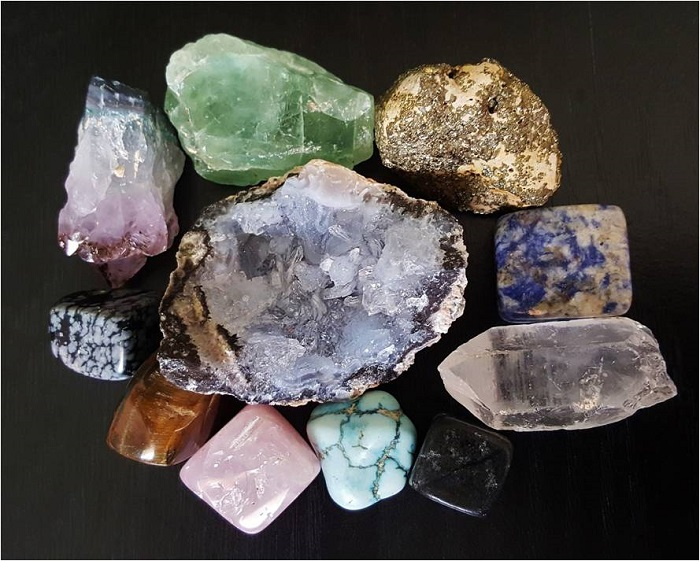
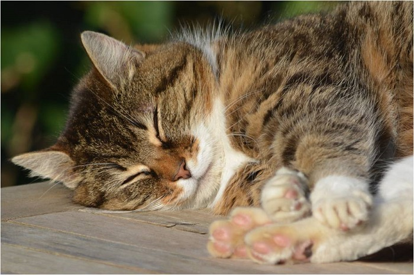
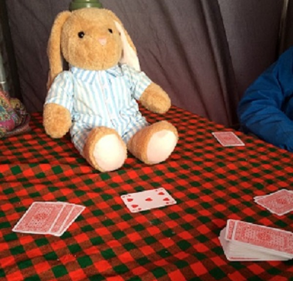

尽管我们是去爬乞力马扎罗山的，但是其实除了赶路以外，我们有大把的可支配的时间。你想要怎么度过这些时间呢？看小爱给你支招！
记日记
攀登乞力马扎罗山是一件昂贵又值得纪念的事，用笔记录下你每天的行程，日后翻来看看回忆一下自己在山里的时光绝对是一件值得做的事；另外，视频日志是最近开始流行起来的，用影像记录下你在山里的每一天，回到家里和家人、朋友分享也同样是一种乐趣。不过，你完全可以两种形式的日志结合在一起！
看书
你可以随身带一本喜欢的书或是索性带着你的kindle。因为没有什么比你在山里，远离各种喧嚣更适合看书的啦。
搜集石头
乞力马扎罗是由3座火山组成的，石头们是火山活动的最好见证者，你完全可以在闲暇的时候在营地周围转转，收集一两块石头带回国。
睡觉
在山上，你的睡眠会受到高海拔与周围环境变化的影响。不要觉得好不容易来了乞力马扎罗，所以就勉强自己留在大帐篷里陪着同伴聊天。利用登山之余的时间补补觉，为登顶攒足体力也是可以哦，凡事量力而行才好。
扑克牌或者uno
如果你不是特别要求，你多半会和来自世界各地的登山者分在一个团队里一起登山。由于语言不通、文化背景不同等等，你们相处的开始多半会比较尴尬，和你的队友们坐下来打打扑克或是玩玩儿uno会是一个很好的增进相互了解的机会。